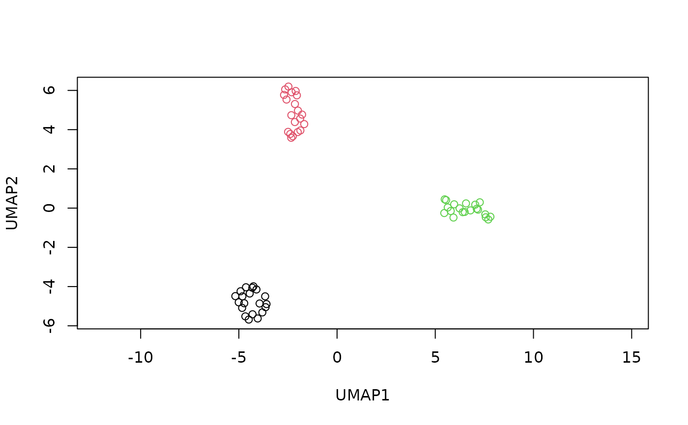

Ordinates samples from their distances, for plotting beta diversity, by
placing samples that are near neighbours in dm near each other on the
plot. Follows the same procedure as uwot::umap(batch = TRUE) given a
dist object, and gives the same layout from the same settings, starting
coordinates and random seeds, but runs in parallel C, without ever copying
dm into an \(n \times n\) matrix.
Usage
umap(
dm,
n_axes = 2L,
n_neighbors = 15L,
min_dist = 0.1,
spread = 1,
n_epochs = NULL,
learning_rate = 1,
negative_sample_rate = 5,
repulsion_strength = 1,
set_op_mix_ratio = 1,
local_connectivity = 1,
bandwidth = 1,
init = "spectral",
seed = 0L,
cpus = n_cpus()
)Arguments
- dm
A
distobject, such as frombeta_div()orbray(), or a symmetric numeric matrix of distances. Must not containNAs.- n_axes
The number of dimensions. Default:
2- n_neighbors
How many nearest neighbours of each sample (counting the sample itself) to use. Larger values preserve more of the global structure; smaller ones more of the local detail. Values larger than the number of samples are reduced to it. Default:
15- min_dist
How close samples can be packed together on the plot, relative to
spread. Default:0.1, as in umap-learn (uwot's is0.01).- spread
The scale of the plot's distances, together with
min_dist. Default:1- n_epochs
The number of optimization epochs.
NULL, the default, uses 500 for up to 10,000 samples and 200 for more, asuwot::umap()does.- learning_rate
The initial learning rate (step size) of the optimization. It decreases linearly to 0 over the epochs. Default:
1- negative_sample_rate
How many non-neighbours (negative samples) to push away for each neighbour pulled closer. Default:
5- repulsion_strength
The weight of the repulsion from negative samples, relative to the attraction of neighbours. Default:
1- set_op_mix_ratio
How the neighbour graphs of the samples are combined, from
0(fuzzy intersection) to1(fuzzy union). Default:1- local_connectivity
How many nearest neighbours of each sample are assumed to be fully connected to it. Default:
1- bandwidth
Scales the effective number of neighbours, as in
uwot::umap(). Default:1- init
The starting coordinates:
"spectral"(the default),"pcoa","random", or a numeric matrix with one row per sample andn_axescolumns. See "Starting coordinates" below.- seed
An integer seed for the random parts of the method: the negative samples, random starting coordinates, and the small random jitter added to spectral ones. The same seed gives the same result. Default:
0- cpus
How many parallel processing threads should be used. The default,
n_cpus(), will use all logical CPU cores.
Value
A numeric matrix with one row per sample and one column per
dimension, named "UMAP1", "UMAP2", etc., as described in "Ordination
result" below. method is "umap"; eig and prop are NA, as UMAP
has no eigenvalues. Then come:
a,b: The parameters of the curve \(1 / (1 + a d^{2b})\) that turns plot distances \(d\) into similarities, fitted frommin_distandspread.init: How the starting coordinates were chosen:"spectral","pcoa","random", or"matrix"(given ininit);"none"for fewer than 2 samples, which are placed at 0.n_epochs: The number of optimization epochs run.n_neighbors: Then_neighborsgiven.
Details
Method
UMAP (McInnes et al. 2018) builds a weighted graph of each sample's nearest neighbours, then finds plot coordinates whose own neighbour graph is as similar to it as possible.
Neighbours. Each sample's
n_neighborsnearest neighbours, counting itself, are found exactly fromdm. Ties go to the sample that comes first.Graph. A neighbour \(j\) of sample \(i\) at distance \(d_{ij}\) gets weight \(\exp(-(d_{ij} - \rho_i) / \sigma_i)\), where \(\rho_i\) is the distance to the nearest neighbour (other than duplicates) and \(\sigma_i\) is chosen by binary search so that the weights sum to \(\log_2(\)
n_neighbors\()\). The two weights \(w_{ij}\) and \(w_{ji}\) of each pair are combined by fuzzy union, \(w_{ij} + w_{ji} - w_{ij} w_{ji}\).Curve.
aandbare fitted by least squares (Levenberg-Marquardt, as umap-learn fits them) to a curve that is 1 up tomin_distand decays exponentially, with scalespread, beyond it.Layout. Starting from
init, stochastic gradient descent pulls the two samples of each edge together, sampling each edge in proportion to its weight, and pushes each sample away fromnegative_sample_raterandomly chosen samples per edge sampled. As inuwot::umap()'s batch mode, each epoch computes every sample's gradient from the coordinates at the start of the epoch, then moves all samples at once by the Adam optimizer (\(\beta_1 = 0.5\), \(\beta_2 = 0.9\), \(\epsilon = 10^{-7}\), uwot's settings for batch mode). Finally, the coordinates are centered.
Why batch mode
uwot::umap()'s default optimization moves samples one edge at a time,
each move seeing the ones before it. That can only run on one thread if
it is to be reproducible, and it takes nearly all of the run time. In
batch mode, the samples' gradients within an epoch don't depend on each
other, so umap() computes them on cpus threads, and still gets the
same result for any number of threads. The layouts differ from those of
uwot's default mode only as different random draws would: neighbour
preservation, trustworthiness, and the final cross-entropy are about the
same.
Starting coordinates
"spectral": The eigenvectors of the graph's normalized Laplacian for its 2nd to \((k+1)\)th smallest eigenvalues, scaled so that the largest absolute coordinate is 10, plus normal noise with standard deviation 0.0001. When the graph is not connected, the"pcoa"start is used instead, scaled to standard deviation 1, and with fewer than 3 samples (or \(k > n - 2\)), the"random"one, as inuwot::umap()."pcoa": The firstn_axesaxes ofpcoa(), each centered and scaled to standard deviation 0.0001 (uwot::umap()'s"spca")."random": Coordinates uniform on [-10, 10).A matrix: Used as is.
Differences from uwot::umap()
umap()always optimizes in batch mode, so its layouts are those ofuwot::umap(batch = TRUE), not of uwot's default.min_distdefaults to0.1, the canonical value used by umap-learn and most other implementations, rather than uwot's0.01. Other defaults are the same.The random numbers come from
seed, not from R's random number generator, soset.seed()has no effect, and R's random number stream is left untouched. In batch mode,uwot::umap()draws from R's generator two 32-bit seeds per sample per epoch, for each sample's stream of negative samples, and the jitter of spectral starts.umap()makes those fromseedinstead, with the same streams of negative samples (PCG) from the same seeds; given the same seeds and starting coordinates, the two give the same coordinates (to the last bit, for the same compiler and math library).The spectral start's eigenvectors are computed by block Lanczos iteration, the same solver as
pcoa()'s, to relative residuals of \(10^{-14}\) (at worst \(10^{-10}\)) rather thanRSpectra's tolerance of \(10^{-4}\), and each one's sign is fixed (its largest absolute coordinate is positive).The
"pcoa"start, and the fallback for unconnected graphs, come frompcoa()rather thancmdscale(); they differ only by rounding and the signs of the axes.Finally, each axis is flipped so that its largest absolute coordinate is positive.
Speed and memory
uwot::umap() given a dist object copies it into an \(n \times n\)
matrix and sorts each of its columns in R. umap() reads the packed
triangle of dm directly, keeping only the n_neighbors closest of each
sample. Beyond dm itself, memory use is proportional to \(n\) times
n_neighbors. cpus threads find the neighbours, build the graph,
compute the spectral start, and compute each epoch's gradients.
Reproducibility
Results are identical from run to run and for any number of cpus.
Ordination result
Every ordination function (pcoa(), pca(), rpca(), dbrda(), capda(),
capscale(), mds(), nmds(), isomap(), tsne(), umap(), and so
dist_ord()) returns the same kind of
object: a numeric matrix with one row per sample and one column per
axis, so that it can go straight into a data frame. Rows are
named after the samples, when the input has names. Columns are named
after the method: "PCoA1", "PC1", "RPCA1", "dbRDA1" or "CAP1"
(then "MDS1" for unconstrained axes), "MDS1", "NMDS1",
"Isomap1", "TSNE1", "UMAP1", and so on.
Its attributes always begin with these three, in this order, each with one value per column:
method: The method's ID, e.g."pcoa"or"nmds".eig: Each axis's eigenvalue, on the method's own scale:pcoa()andisomap()give the eigenvalues of Gower's centered matrix (sums of squares);pca()andrpca()give variances, which arepcoa()'s divided by \(n - 1\) for \(n\) samples; anddbrda()andcapscale()followvegan, which also divides by \(n - 1\) when any distance is 4 or more.NAformds(),nmds(),tsne(), andumap(), which have no eigenvalues.prop: The proportion of the total variance (or inertia) that each axis explains. Unlikeeig, it is comparable between methods, so use it to label axes.NAwhere it isn't defined.
Attributes particular to the method follow them, and last display,
with the ordination's title for plot() and print(): the method's
name, and for the methods that take distances, the distance matrix's
title, such as "Principal Coordinates Analysis of Bray-Curtis
Dissimilarity" (see ecodive_display). The matrix has class
"ecodive_ord" (as well as "matrix"), so that print() lists the
other attributes by name rather than in full, and plot() draws the
samples on the first two axes, labelled from the attributes, with any
loadings, constraints and centroids on top (see plot.ecodive_ord()).
plot(ord, "Species", iris) colours the samples by a column of
metadata. Subsetting with [, or as.data.frame(), gives a plain
matrix or data frame without the attributes.
References
McInnes, L., Healy, J., & Melville, J. (2018). UMAP: Uniform manifold approximation and projection for dimension reduction. arXiv, 1802.03426. doi:10.48550/arXiv.1802.03426
Melville, J. (2020). uwot: The Uniform Manifold Approximation and Projection (UMAP) Method for Dimensionality Reduction. R package. Its C++ header library (BSD 2-Clause License) is the basis of the graph and layout code. https://github.com/jlmelville/uwot
Wu, K., & Simon, H. (2000). Thick-restart Lanczos method for large symmetric eigenvalue problems. SIAM Journal on Matrix Analysis and Applications, 22(2), 602-616. doi:10.1137/S0895479898334605
Examples
dm <- bray(iris[, 1:4])
ord <- umap(dm)
plot(ord, 'Species', iris)

ord
#> # A matrix: 150 samples × 2 axes
#> # Uniform Manifold Approximation and Projection of Bray-Curtis Dissimilarity
#> UMAP1 UMAP2
#> 1 5.25 -1.77
#> 2 4.4 -0.19
#> 3 5.16 0.119
#> 4 4.95 -0.0174
#> 5 5.25 -1.6
#> 6 4.97 -2.73
#> 7 5.25 -0.189
#> 8 4.86 -1.27
#> 9 4.79 0.405
#> 10 4.34 -0.339
#> # … 140 more samples
#> # Use print(x, n = ...) to see more samples
#> # Attributes: method, eig, prop, a, b, init, n_epochs, n_neighbors
str(ord)
#> 'ecodive_ord' num [1:150, 1:2] 5.25 4.4 5.16 4.95 5.25 ...
#> - attr(*, "dimnames")=List of 2
#> ..$ : NULL
#> ..$ : chr [1:2] "UMAP1" "UMAP2"
#> - attr(*, "method")= chr "umap"
#> - attr(*, "eig")= num [1:2] NA NA
#> - attr(*, "prop")= num [1:2] NA NA
#> - attr(*, "a")= num 1.58
#> - attr(*, "b")= num 0.895
#> - attr(*, "init")= chr "pcoa"
#> - attr(*, "n_epochs")= int 500
#> - attr(*, "n_neighbors")= int 15
#> - attr(*, "display")=List of 1
#> ..$ title: chr "Uniform Manifold Approximation and Projection of Bray-Curtis Dissimilarity"